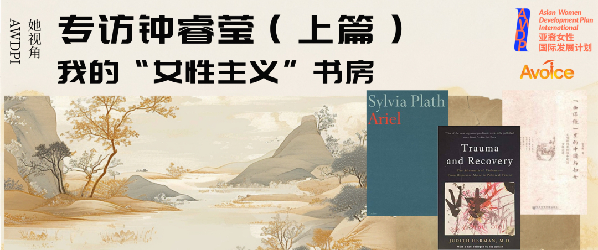
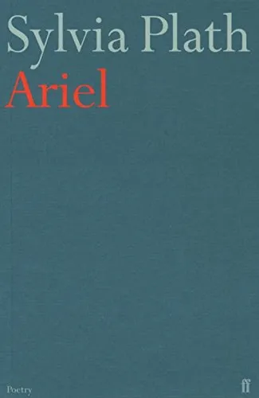
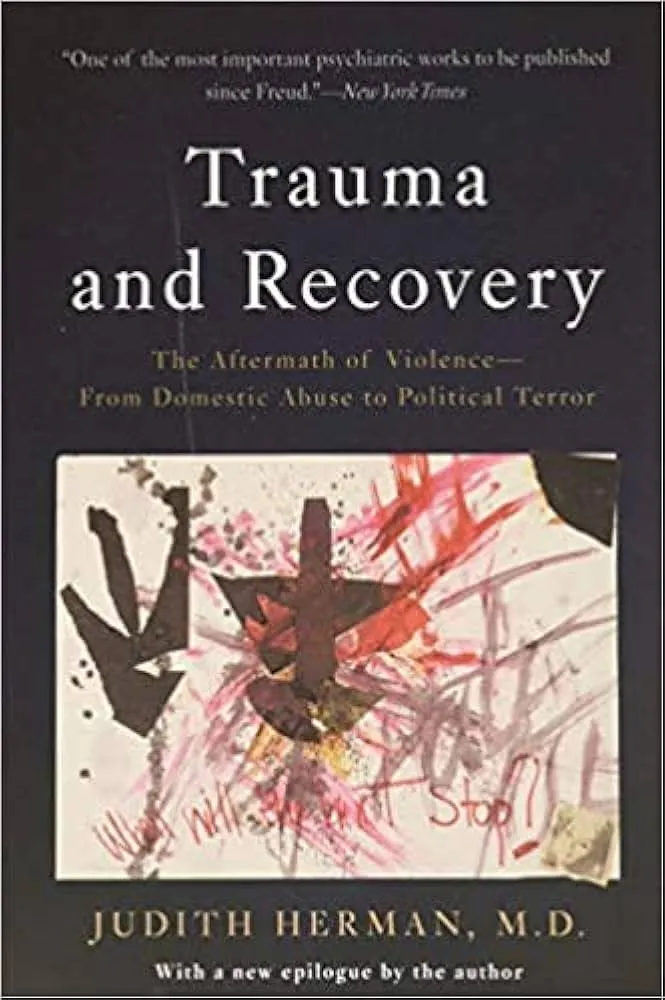
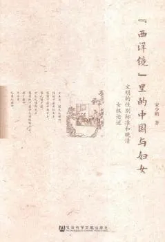

“关心性别问题并不是某一天突然出现的选择，而是从我青春期的阅读与情感经验中慢慢积累、沉淀下来的一种能力。”
本期的“她视角专栏”，AWDPI邀请到正在剑桥大学多学科性别研究专业攻读硕士学位的钟睿莹。她的研究方向聚焦在性别暴力、文化遗产与集体创伤。
从青春期开始阅读性别研究相关书籍，到置身伦敦援助组织**Hestia Life Beyond Crisis负责家暴热线工作，再到支援开普敦的国际组织Gender Rights In Tech，为性暴力幸存者编写支持手册，**钟睿莹始终践行“女性主义”，并不断深化对其的思考。
透过讲述，她向我们展示了自己如何走上性别研究之路，如何在不同的生命阶段从女性主义书籍中汲取力量，以及如何在志愿工作中与不同国别、种族的女性相遇、互助。
本篇为系列采访的上篇，钟睿莹向AWDPI讲述了一个对文学和诗歌充满热情的女孩如何选择“女性主义”道路的故事：我们并非天生就懂得“女性主义”，而是在某个瞬间，被一本书、一段文字，或一种情感所触动，然后才第一次意识到：
那些无法言说的感受，原来也有语言可以承载。
创伤是可以被说出的
**我第一次读西尔维娅·普拉斯（Sylvia Plath）是在十四岁。**她的诗是那么的赤裸、直接。她严苛锋利的文风切开了充斥着粉饰和幻想的厌女症世界。她将自己私密的创伤经验化为诗性的语言。我完全被这种自白式叙述震撼到了。
普拉斯毫不妥协的坦诚，让我第一次感受到了一种“女性视角”的情感诉说。女性被长期忽视的经验、激烈情感和主体意识在她的诗中获得了一席之地。
那时候的我对诗歌一窍不通，但几乎每天都会沉浸在她的文字里。奇妙的是，我从中感受到的不只是悲伤，还有一种强烈的生命力：**原来有些压抑和不安，是可以被理解、被说出来的。**创伤的叙事不仅仅是对痛苦的再现，越是面对伤口，就越能找到继续前行的力量。”

书名：《爱丽尔》（Ariel）
作者:西尔维娅·普拉斯 （Sylvia Plath）
出版年份: 1968
豆瓣链接：https://book.douban.com/subject/1369770//
豆瓣评分：8.9
“而我
我是箭头
是露珠，自杀性地
与冲力合而为一
飞入血红的
眼睛，那白昼的大埚。”
—选自《爱丽尔》
这种体悟让我在高中时对理解创伤的主流理论——弗洛伊德的精神分析学派产生了浓厚的兴趣。可当我读弗洛伊德时，却生出一种强烈距离感，直到朱迪思·赫尔曼（Judith Herman）的《创伤与修复》才让我发现这种不适从何而来。
精神分析的起点和创伤研究密切相关：十九世纪末，弗洛伊德和布鲁尔通过倾听“歇斯底里症”女性的讲述，逐渐意识到创伤记忆对心理症状的影响，而这些女性几乎都经历过来自家庭或社会的性暴力。
但很快，精神分析放弃了这种以创伤为中心的解释：如果承认这些创伤真实存在，就意味着必须为某种看不见的暴力命名。而施暴者正处于学者所依附的、受人尊敬的中产阶级社群之中。
由于处于政治和社会压力的漩涡中，弗洛伊德等人转而否认女性的创伤、愤怒和痛苦，反而建立起以男性、异性恋为中心的心理理论，比如“俄狄浦斯情结“、”阴茎嫉妒”等等。
与我而言，这种理论无法真正回应女性在现实生活中所经历的情感与困境。
然而我并没有完全否定精神分析理论，弗洛伊德让我意识到性别和心理并不是由生物天性决定的，而是在欲望、幻想和与他者的关系中被不断建构出来的。”

书名：《创伤与修复》（Trauma and Recovery）
作者: 朱迪思·赫尔曼 （Judith Herman）
出版年份: 2015
豆瓣链接：https://book.douban.com/subject/26721477/
豆瓣评分：9.2
“心理创伤的系统研究也需要倚靠政治运动的支持。的确，这样的研究是否有可能进行或公开讨论，本身就是个政治问题。
战争创伤的研究之所以具有正当性，是因为社会大众开始质疑为何要让年轻男子牺牲在战场上;性与家庭生活创伤的研究之所以具有正当性，是因为社会大众开始认识到女性与儿童地位低下的事实。
要提升这个领域的研究，就需得到力量强大的政治运动之支持，并确立研究者与受害者的同盟关系，一起对抗社会上否认和要求噤声的力量。”
—选自《创伤与修复》
青春期的阅读让我开始思考“创伤如何被说出”，但真正将这种体悟从情感经验推向理论思考的，是剑桥大学的暑期学校课程：性别研究导论。
在那门课上，我第一次接触到**“女权主义精神分析理论”**。它改造了以弗洛伊德为中心的精神分析理论，把传统精神分析关于人心和社会关系的洞见，重新放回到女性的经验和处境之中。
按照我现在的理解，关于创伤的女权主义精神分析强调创伤的**“关系性”**。比如，赫尔曼认为创伤不是孤立的心理事件，而是一种被社会系统性否认的经验，只有通过讲述与他人的见证，才能重新获得承认。
杰西卡·本杰明（Jessica Benjamin）指出，创伤的本质是一种关系的断裂——当一个人得不到他人的承认时，主体性就被破坏。因此，修复创伤也必须在新的关系中完成，在“相互承认”里重建自我。
阅读这些性别研究文献时常常带给我“恍然大悟”的时刻。这些时刻是颠覆性的，让我确定性别研究就是我想走的路。我爱上了它不断挑战学科边界和知识权威的特质，它从不把理论当作终点，而是一次又一次地回到经验与生活之中，去理解、去改变。
在不同叙事之间寻找理解与平衡
女权主义精神分析为我打开了理解创伤与主体性的理论视角。然而，作为一名东亚女性，我意识到不同的文化语境与女性主义之间存在着千丝万缕联系。正因如此，我开始转向阅读本土女性主义学者的写作。宋少鹏教授正是引领我重回东亚语境的第一位学者。

书名：《西洋镜下的中国与妇女》
作者: 宋少鹏
出版年份: 2016
豆瓣链接：https://book.douban.com/subject/26821732/
豆瓣评分：8.8
_“自由主义女权似乎无解，除了追求法律上的抽象平等权和政策上的肯定性政策，国家的手段用尽之后，只能诉诸社会层面的文化改造。
_
自由主义女权理论和实践陷入了瓶颈。这个瓶颈的实质是资本主义政治-经济体制内的自由主义女权无法处理女性在现代资本主义社会中面临的结构性问题。”
—选自《西洋镜下的中国与妇女》
我第一次接触宋少鹏教授的作品是在高二，那时我身边同学的观念大致可以分为两种：
一是带着父权色彩的传统家国叙事，把女性的价值与家庭、民族延续绑定；
二是被新自由主义话语收编的女权话语，强调“自我赋权”“自由选择”，却常常以西方的标准定义什么叫“现代女性”，难以触及维系不平等的制度与权力结构。这种话语很大程度上带有白人女权主义的殖民底色。
这两者让当时的我无所适从。
这时，我接触到了宋少鹏教授的《西洋镜下的中国与妇女》。她揭示了中国近代的妇女解放运动自诞生起就被卷入家国叙事中：清末知识分子在引进西方思想时，把妇女问题和民族问题牢牢绑定。女性被号召走向现代，但她们的身体与劳动仍被纳入“救国”的政治框架中。
正因为有了这样的历史视角，我才意识到今天的新自由主义与民族主义女权话语表面上针锋相对，实际上在某种程度上是同构的：一个要求女性“足够现代”，另一个要求女性“足够奉献”，两者共同指向全球秩序中所划分的“理想主体”的目标，女性则是跨进殖民想象所需要依赖的工具。
作为一个在英国留学的中国女性，我常常被两种目光框定：在西方，我被期待反叛某种“东亚女性”的形象，从而获得进入一个“更现代化”的世界的许可；而在国内，我又被期待去继承传统的角色。
然而，宋少鹏教授让我学会不再急于在**“现代/落后”或“自我/国家”**的二元对立里选边站，而是把自己放在夹缝中去观察、去提问。这也让我逐渐能够以更从容的态度对待自己的身份冲突和多重边缘化。
**从理论的抽象思辨回归到与世界的“温柔对话”
**
那些在阅读中建立的思辨框架，**只有在与现实生活的碰撞中才会被真正检验、拓展。**在与外界进行女性主义探讨的过程中，我遇到过一些质疑，大致可以分为两类。
第一类来自男性，**他们常常会觉得“父权制”“女权主义”这些词汇带有敌意，好像是在指责他们个人。**但父权制其实是一种历史与社会结构，它不仅压迫女性，也让男性必须不断证明自己的“男子气概”，被迫承担沉重的期待与焦虑。当他们意识到这是一种让所有性别都受限的结构时，对话就会变得更顺畅。
第二类质疑更多来自女性朋友。当我提出一些批判性的观点时，对方常常感到不安。比如我在讨论是否应该废除婚姻制度时，有些处在稳定异性恋关系中的朋友会对自己拥抱异性恋的选择感到焦虑，害怕自己被视作“不够女权”。
我会承认自己作为一个学术研究者，有时确实忽略了理论与现实之间的巨大差距。在很多次辩论和交谈中，我都会为自己的一些话后悔，反思自己如何能够做得更好。我相信，只有通过相互尊重与彼****此共情的交流，批判才能真正展开。真正的批判既能保持锋芒，又能让人感到被理解和被邀请参与思考。
对我而言，女性主义从来不是一种标签，而是一种持续学习、思考和实践的方式。每一本书、每一次对话、每一次被误解或被理解的时刻，都是我理解世界的一部分。
如今，当我回头看那些让我走向性别研究的瞬间，我意识到：
每一个我以为的终点都并不是我的终点。或许，我所践行的女权主义是一种不断延展、永无尽头的旅程。我所能做的是去倾听、去思辨、去行动、去温柔地与世界对话。
1
END
1
撰稿｜杨蔚钧
编辑｜伊哲
封面｜池一诺